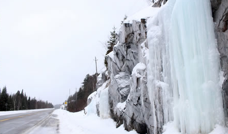

Activities
Winter

Enjoy snow-covered trails, cozy fires, and outdoor adventures during the winter season. Choose from cross-country skiing, snowshoeing, or relaxing at the resort. Winter is magically romantic with a crackling wood fire, a glass of champagne and your own bubbling Whirlpool Bath Tub and private rejuvenating Hot Tub, in-room real crackling wood fireplace and with romantic 1st Class gourmet dining. Picture perfect with pure white snow covered trees and lakes sparkling like diamonds in the snow. Enjoy a surreal evening of walking under the most brilliant stars.For those who need a little help getting outdoors we even have all the outdoor clothing for you if you decide to participate. Book Direct and Surprise your partner! Or, Perhaps buying a Gift Certificate, to show your love, as a Christmas Gift, or Valentines Gift, or Wedding Gift, or Birthday Gift. Weekends, Midweek or Week Long Vacations!
All Packages

Wilderness Nature: Feed the Canada Jay
Feed Canada Jays in the wilderness and enjoy this unique experience in nature.
- Available: December to March
- Includes: Nature trail access and seeds
- Difficulty: Moderate
Cross Country Skiing & Snowshoeing
Explore snowy trails with cross-country skiing or snowshoeing at the resort.
- Trail map provided
- Gear rentals available
- Multiple scenic trails
Guided Ice Climbing Trips
Embark on thrilling ice-climbing adventures with expert guides. Enjoy frozen waterfalls and unique experiences. Tranquil with peacefulness. Algonquin Park has International quality ski trails; track set and skating lane. 48 kilometres of groomed and 23 kilometres of non-groomed cross-country ski trails available in three low-usage trail networks, typically December to early April. Check the latest ski trail conditions If you cannot go skiing you can always go IceHiking. Provided Free to use: - Wax-less cross-country skis, boots and poles. - Waxing station for those that enjoy waxing. - Park Pass from our Office - Pro snowshoes - Park Pass from our Office Serene spots for Snowshoeing: 1) Algonquin outdoor Logging Museum Trail 2) Spruce Bog Boardwalk Trail 3) Mew Lake Old Railway Trail Go to Mew Lake Campground for starting point. Read Story by SnowShoe Mag
